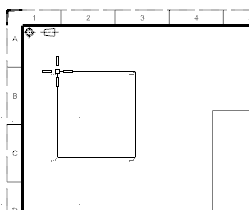
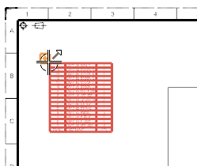
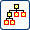
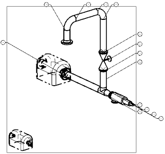

On the Table toolbar, from the Table Drop-down list, select Parts List .
Place the parts list at the upper left corner of the drawing sheet.

Right-click the origin of the parts lists, and then choose Edit Levels.

On the Edit Levels dialog bar, turn on , and then click .
Right-click the origin of the parts list, and then choose Auto Balloon.
